Art has been a part of my life since elementary, and I've always found ways to create and express myself through my art. As a kid, I always traced until I started developing my own style. I still don't know what my particular style is, but I still enjoy being able to create what my mind can conjure. I love exploring the ideas of spirituality through my art because its a way for me to put my thoughts into someting abstract.
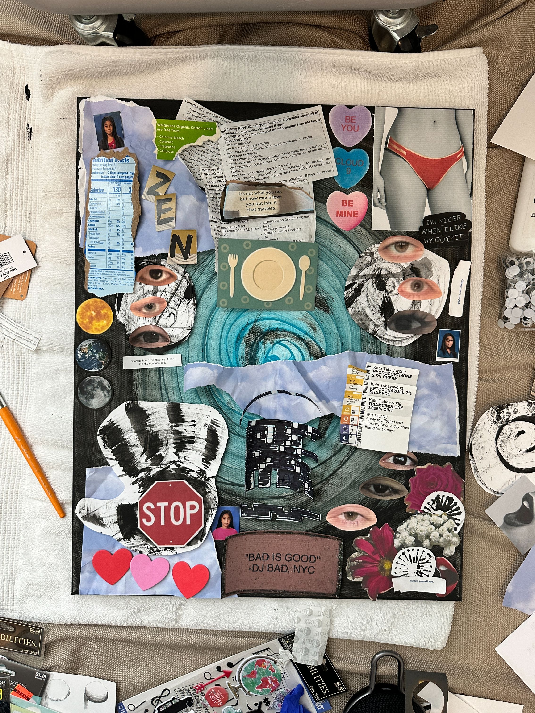
 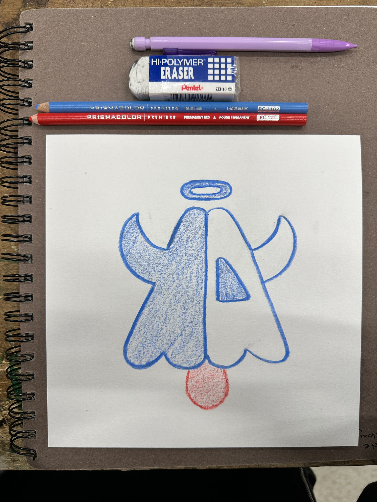
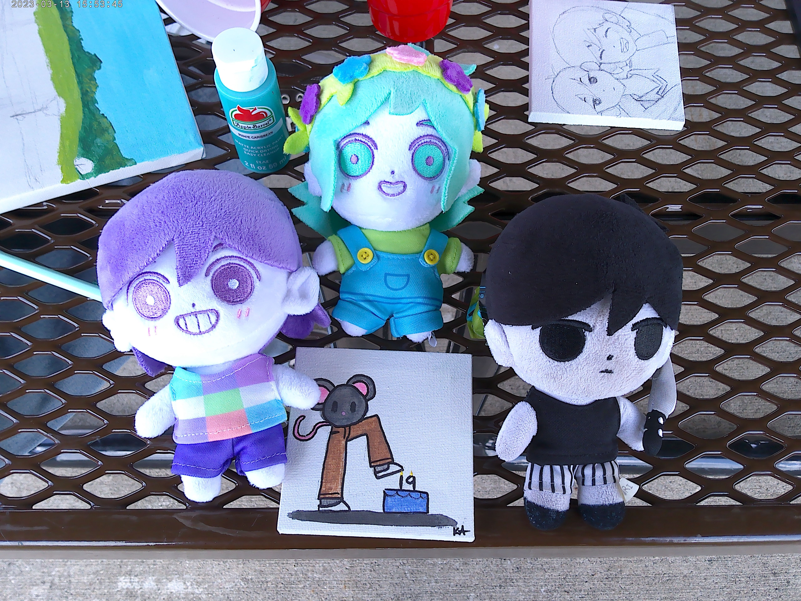
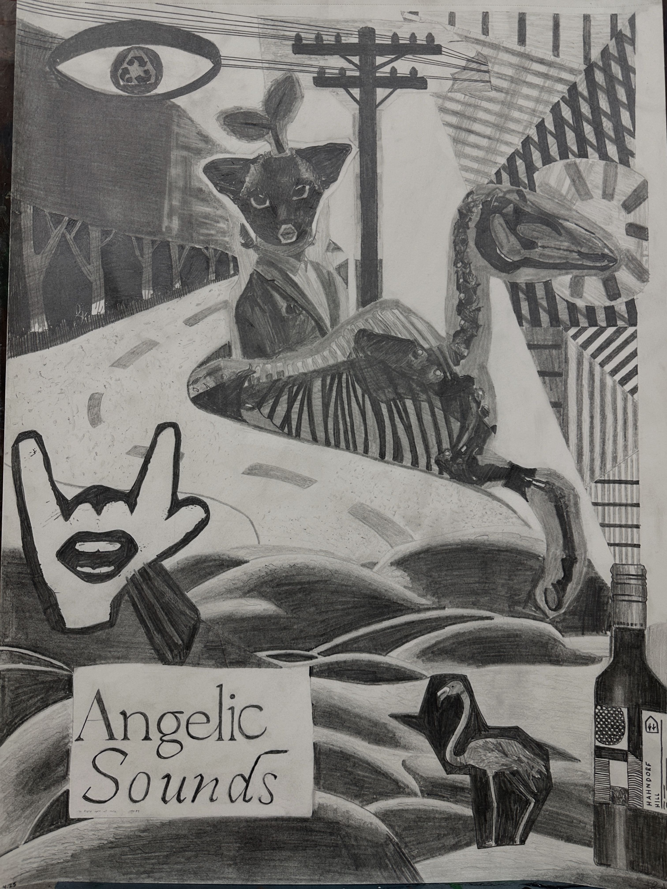
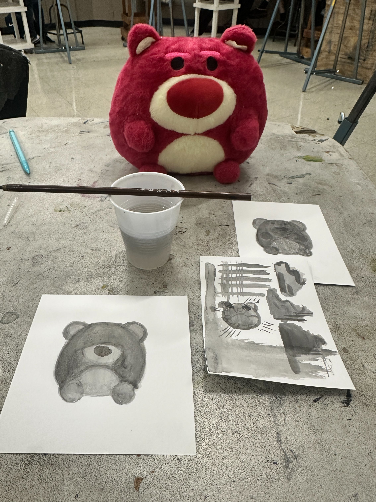
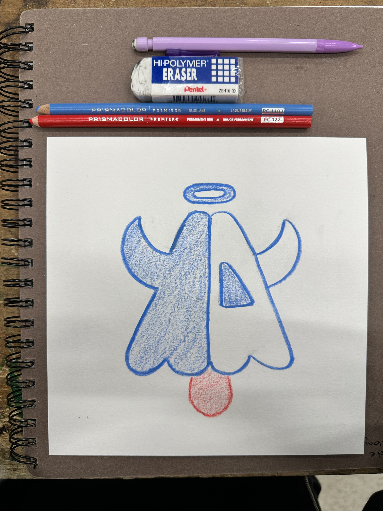
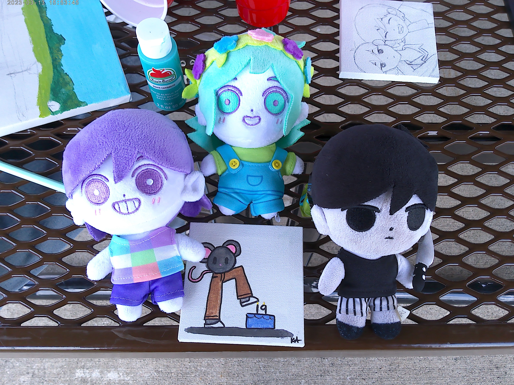
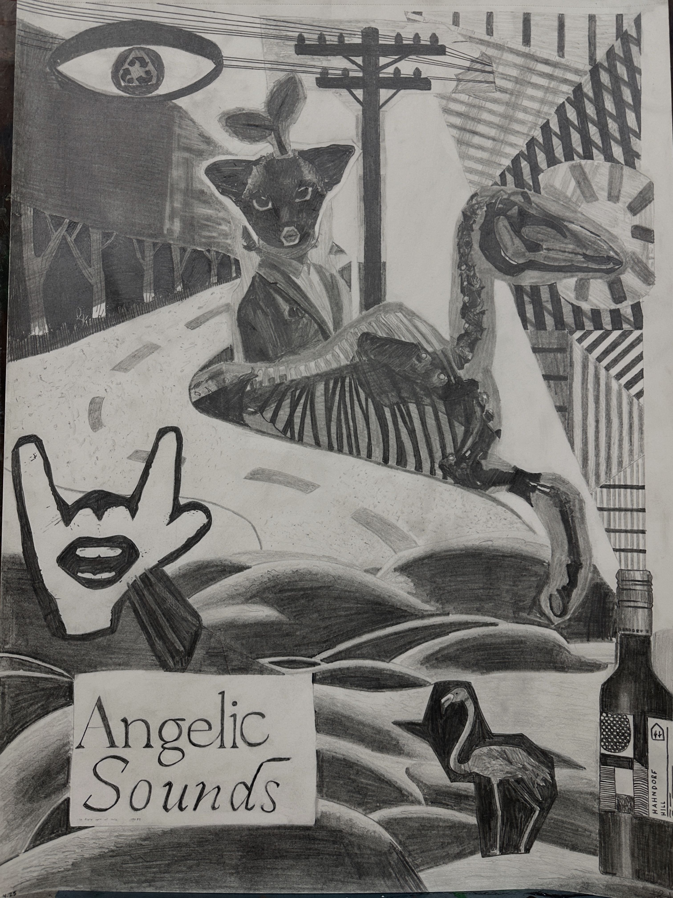
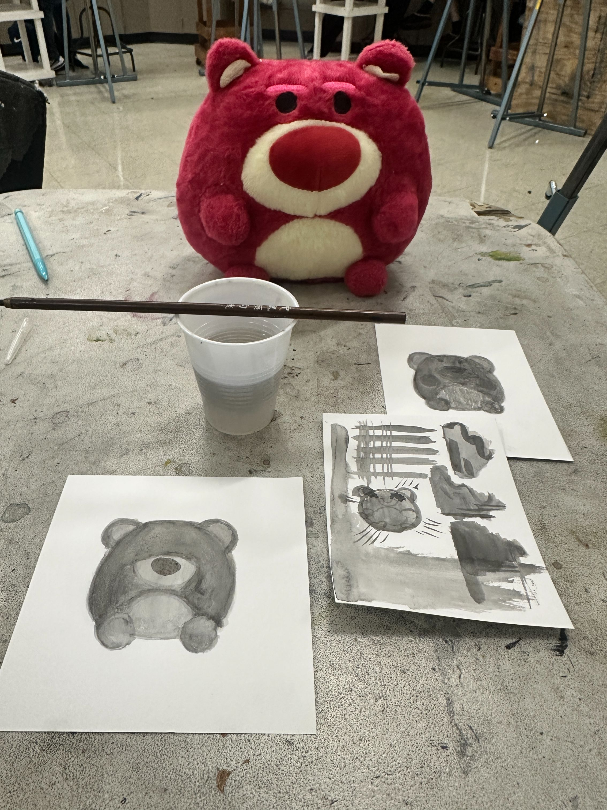
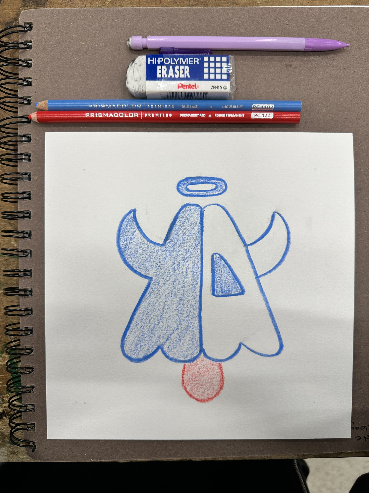
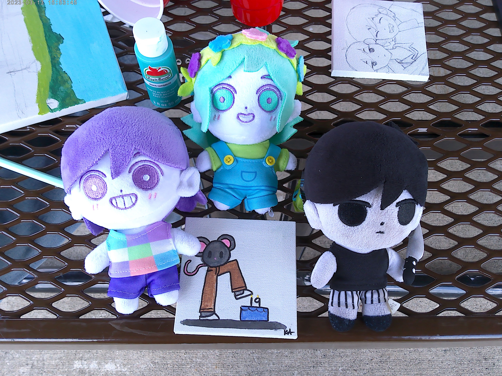
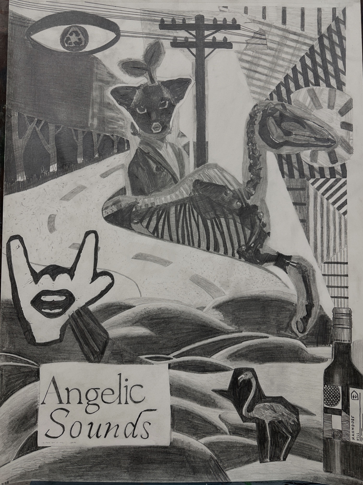
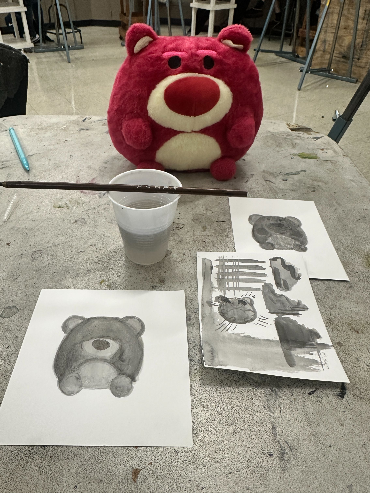